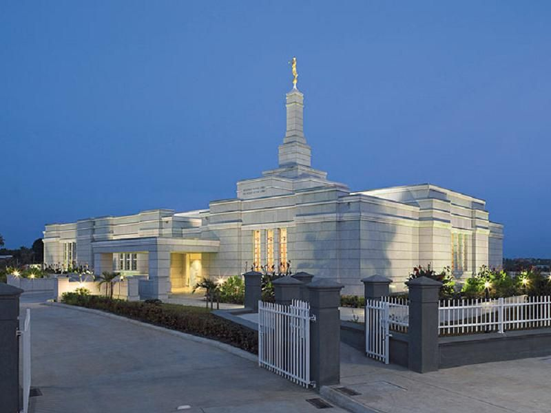
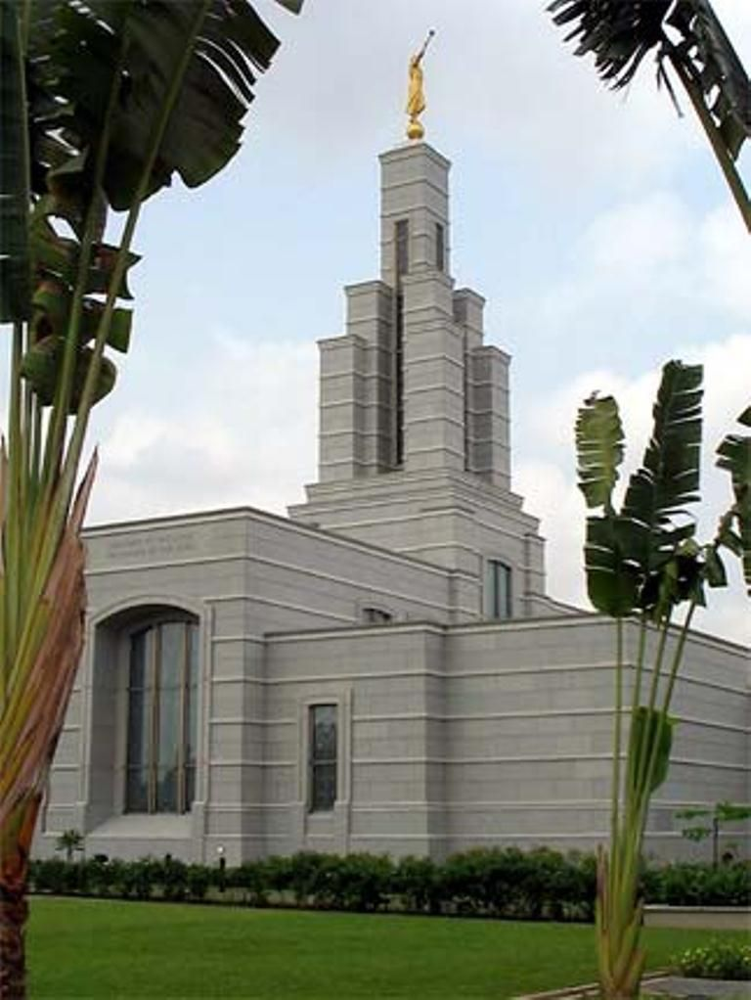

Temple Album
☰
Home
Old
New
Large
Small
Temple
Temple Gallery

San Diego California Temple
Salt Lake Temple

Accra Ghana Temple
Aba Nigeria Temple
Rome Italy Temple
Paris France Temple
Lagos Nigeria Temple
Sydney Australia Temple
Kyiv Ukraine Temple